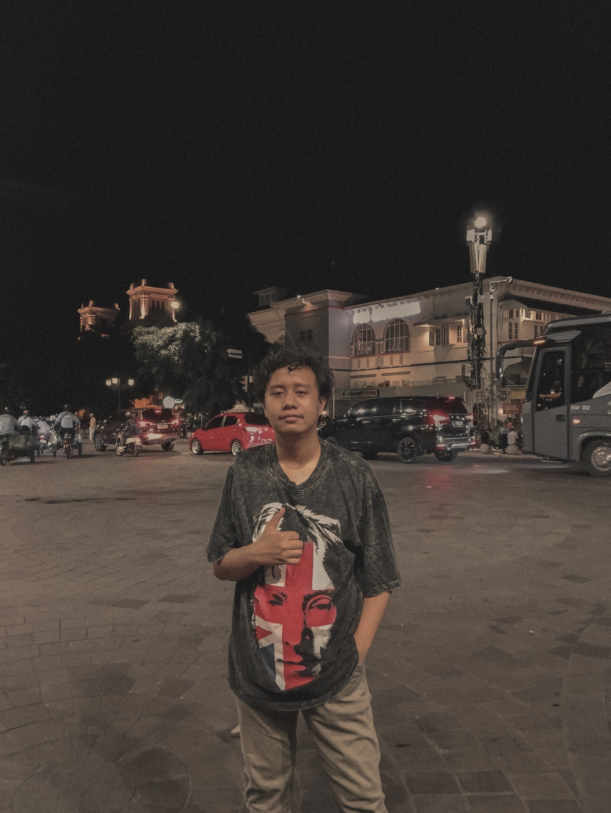

Tentang Saya
Junior Front End Web Developer Programmer yang telah mengikuti berbagai kursus mengenai pembuatan web dan telah membuat beberapa mini project.
Menguasai bahasa pemrograman HTML, CSS, dan Javascript dengan menggunakan
framework Tailwind. Mampu bekerja dalam tim maupun independen.
Social Links
-
Facebook
facebook.com/davefarfar -
Instagram
instagram.com/dave_farfar -
Github
github.com/daveton22 -
Linkedin
linkedin.com/in/dave-farfar
Language
- Indonesia
- English
DaveFarFar
Junior Front End
Web Developer
- davefarfar21@gmail.com
- 08123456789
Biodata Diri
| Nama Lengkap | : | Daveton Piesco Far - Far |
| Tempat, Tanggal Lahir | : | Tual, 21 November 2005 |
| Jenis Kelamin | : | Laki - laki |
| Alamat | : | Langgur, Kecamatan Kei Kecil, Kabupaten Maluku Tenggara |
| Kewarganegaraan | : | Indonesia |
Riwayat Pendidikan
| Universitas Amikom Yogykarta | 2023 - sekarang |
| SMK Siwa Lima St. Josep Langgur | 2020 - 2023 |
| SMP Karel Sadsuitubun | 2017 - 2020 |
| SD Naskat Mathias 3 Langgur B | 2010 - 2017 |
Pengalaman Kerja
Belum bekerja
Keterampilan
| HTML | 90/100 | |
| CSS | 80/100 | |
| JavaScript | 40/100 | |
| Tailwind | 60/100 |